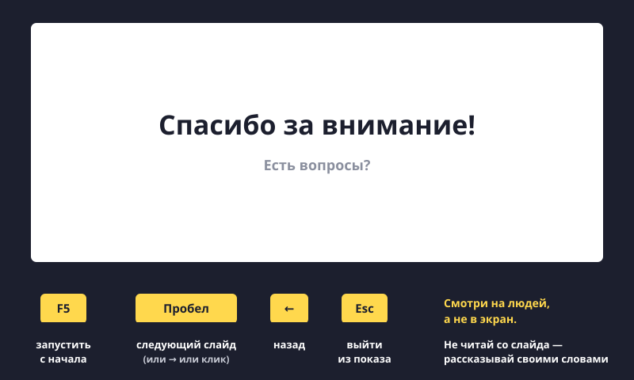

Показываем презентацию
Презентация готова. Теперь главное — показать её и рассказать так, чтобы все слушали.

Показ
- Нажми F5 — показ с первого слайда на весь экран. Shift+F5 — с того слайда, который открыт.
- Следующий слайд: Пробел, Enter, стрелка → или клик мышью.
- Назад: стрелка ← или Backspace.
- Выйти из показа: Esc.
- Если во время показа нужна «указка» — нажми Ctrl+L, курсор станет лазерной точкой.
Как рассказывать
- Не читай со слайда. Слайд — подсказка для тебя и картинка для всех. Рассказывай своими словами.
- Потренируйся заранее 2–3 раза. Можно перед зеркалом или перед родителями.
- Смотри на людей, а не в экран. Иногда поворачивайся к слайду, чтобы что-то показать.
- Говори громко и не спеши. Волнуешься — сделай вдох и продолжай. Все волнуются.
- Последний слайд: «Спасибо за внимание!» и спроси: «Есть вопросы?»
Принести на другой компьютер
- Сохрани файл на флешку: вставь флешку, открой Проводник, скопируй файл в неё (Ctrl+C → Ctrl+V).
- Или отправь себе в мессенджер / на почту, как учились в уроке про Word.
- Перед выходом флешку нужно «извлечь»: значок справа внизу → «Извлечь». Иначе файл может испортиться.
Попробуй сам: покажи презентацию про питомца родителям. Нажми F5, листай пробелом, расскажи по каждому слайду. Выйди по Esc.
Картинки на слайде смотрят все, а тебя слушают. Чем меньше читаешь — тем интереснее рассказ.